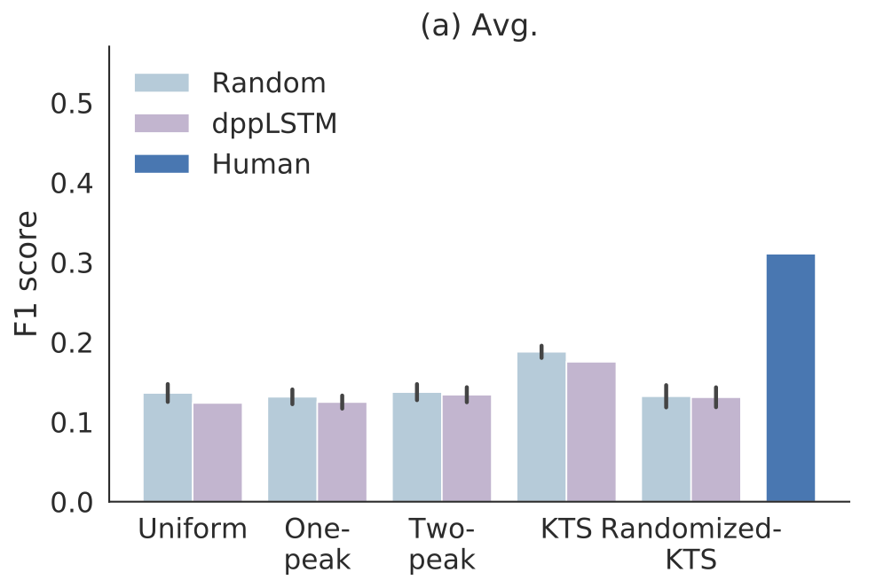
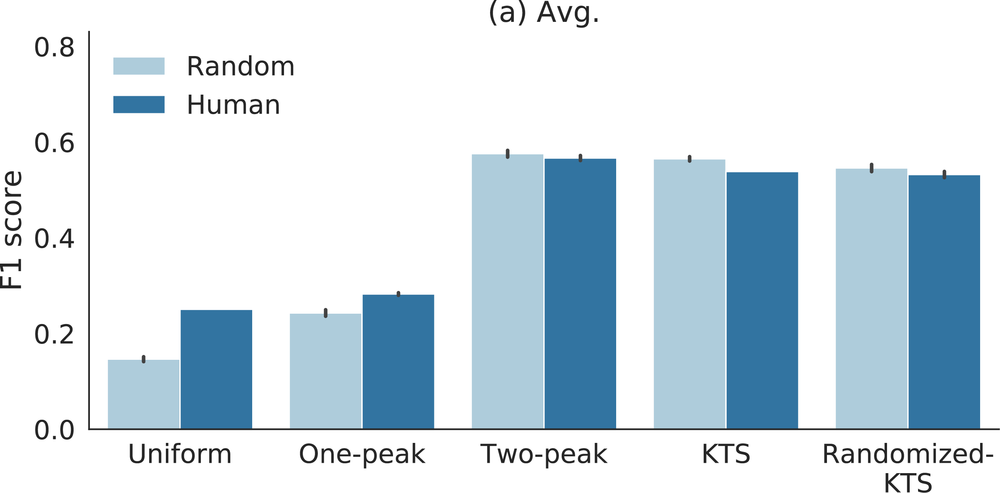

Short Introduction
We provide in-depth assessment of the evaluation pipeline for video summaries using two popular benchmark datasets: SumMe [1] and TVSum [2] . Surprisingly, we observe that randomly generated summaries achieve comparable or better performance to the state-of-the-art. In some cases, the random summaries outperform even the reference summaries in leave-one-out experiments. Moreover, it turns out that the video segmentation, which is often considered as a fixed pre-processing method, has the most significant impact on the performance measure.
- M. Gygli, H. Grabner, H. Riemenschneider, and L. van Gool, “Creating summaries from user videos,” in European Conference on Computer Vision (ECCV), 2014, pp. 505–520.
- Y. Song, J. Vallmitjana, A. Stent, and A. Jaimes, “TVSum : Summarizing Web Videos Using Titles,” in IEEE Computer Society Conference on Computer Vision and Pattern Recognition (CVPR), 2015, pp. 5179–5187.
Results

F1 scores for different segmentation and importance score combinations for SumMe. Light blue bars refer to random summaries and dark blue bars indicate scores of manually created reference summaries (leave-one-out test). Purple bars show the scores for DR-DSN importance scoring with different segmentation methods.

F1 scores for different segmentation methods combined to either random or human annotated importance scores (leave-one-out) for TVSum dataset. Light blue bars refer to random scores and dark blue bars indicates human annotations. Interestingly, the random and human annotations obtain similar F1 scores in most cases.
Paper
Rethinking the Evaluation of Video SummariesCode
mayu-ot/rethinking-evsCitation
@InProceedings{otani2018vsumeval,
title={Rethinking the Evaluation of Video Summaries},
author={Mayu Otani, Yuta Nakahima, Esa Rahtu, and Janne Heikkil{\"{a}}},
booktitle={The IEEE Conference on Computer Vision and Pattern Recognition (CVPR)},
year={2019}
}